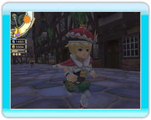

● Quiero quedarme más tiempo fuera, ¡pero Chime me obliga a acostarme al anochecer!

Si elevas la moral lo suficiente y las familias son felices, colocarán luces en sus porches que te permitirán quedarte levantado hasta más tarde.
● ¿Qué son las ofertas especiales?
Las tiendas tienen días de ofertas especiales cuando alcanzan cierto nivel de ventas. Durante esos días las tiendas venden objetos difíciles de encontrar. Las tiendas implicadas se distinguen por la llamativa decoración que ilumina su entrada.
● ¿Qué son los días de fiesta?
Las vacaciones permiten que los aventureros descansen un poco de explorar mazmorras peligrosas. Los aventureros que estaban agotados pueden quedarse en casa descansando, con lo que la exploración del día siguiente será más eficaz. El rey cambia su vestimenta por la de fiesta y las reacciones de los ciudadanos varían en consonancia.

Ten en cuenta que durante las vacaciones no es posible publicar nuevas órdenes.
● Quiero construir más edificios pero nunca tengo suficiente elementite.
Asegúrate de incluir un ladrón con la capacidad Keen Eyes (Ojo de águila) en un grupo de aventureros. Esta capacidad aumentará enormemente la cantidad de elementite encontrado en las mazmorras. Recuerda que para cambiar la profesión de un aventurero a la de ladrón, antes tienes que construir una sala de juego.
● ¡Necesito más guiles!
Tus ingresos son directamente proporcionales al número de ciudadanos del reino, y las casas espaciosas atraen a más ciudadanos que las pequeñas. Las familias felices, además, están más dispuestas a pagar grandes diezmos al rey.
● ¿Cómo se puede aumentar el número de aventureros?
Desarrolla el reino y tendrás acceso a las salas de los gremios. Si financias una sala de gremio, podrás aumentar el número de aventureros que puedes reclutar.
● ¡Es imposible despejar esta mazmorra!
Procura leer atentamente los informes de los aventureros. Pueden contener pistas ocultas para despejar las mazmorras.

Si el jefe de una mazmorra da problemas a tus aventureros, deberías pensar en aumentar la tasa de exploración de la mazmorra. Los atajos y las fuentes de curación de la mazmorra permitirán que tus aventureros se enfrenten al jefe con más posibilidades.